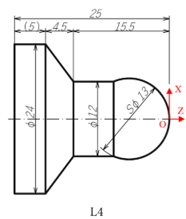
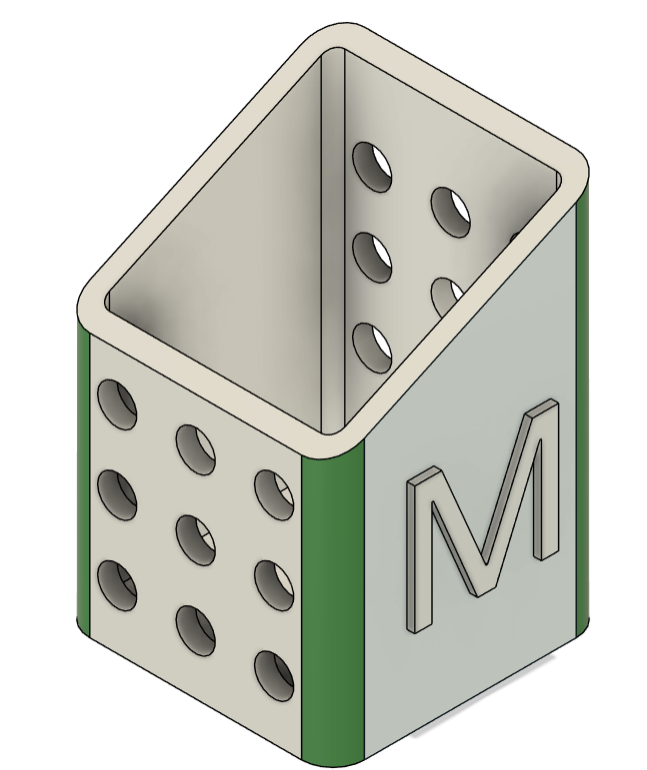

エネルギー機械コースで未来のエンジニアになろう！
中学生のみなさん、こんにちは！エネルギー機械コースでは、モノづくりの基礎から先端技術までワクワクする学びがたくさん待っています。

コースで体験できる4つの「学び」
- 旋盤（せんばん）：金属を回転させて削り、精密な部品を作る加工技術です。
- シーケンス制御：ボタンを押すと自動で機械が動く「プログラムの順序」を学びます。
- 重心計算：倒れない安全な構造物を設計するために、物理と数学を使って重心を求めます。
- 製図（CAD）：コンピュータを使って、頭の中にあるアイディアを正確な図面に起こします。
【ピックアップ解説】重心計算ってどんな計算？（タップで開く）
例えば、2つの物体が並んでいるときの全体の重心位置 $x_g$ は、以下の公式で計算できます：
\[
x_g = \frac{m_1 x_1 + m_2 x_2}{m_1 + m_2}
\]
実際の授業では、複雑な形をした機械の重心も計算できるようになります！

目標達成に必要なアプローチ
- 手を動かして実感する「実践的な実験・実習」
- 座学で身につける「物理・数学の基礎理論」
- 仲間と協力して挑む「モノづくり課題」
もっと詳しく知りたい方へ
コースの雰囲気を知るための関連リンクです。